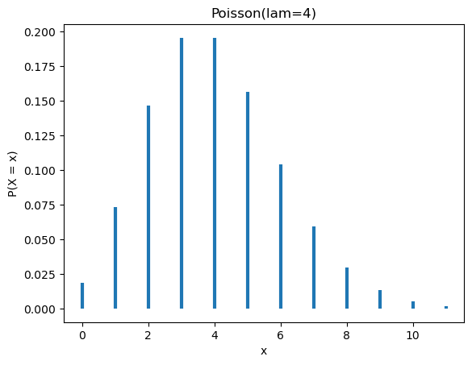

class Rectangulo:
def __init__(self, base, altura):
self.base = base
self.altura = altura
@property
def area(self):
return self.base * self.altura
@property
def perimetro(self):
return self.base * 2 + self.altura * 2
def resumen(self):
return f"Rectangulo(base={self.base}, altura={self.altura})"3 - Herencia
Introducción
En el Prefacio del apunte anterior mencionamos lo siguiente sobre el principio de herencia:
- Herencia: permite crear nuevas clases a partir de otras ya existentes, reutilizando su comportamiento y ampliándolo o modificándolo según sea necesario.
Supongamos que necesitamos representar rectángulos en Python. Anteriormente, optamos por por representarlos con una tupla de longitud dos, donde el primer elemento representaba la base y el segundo la altura. Ahora, que ya dimos nuestros primeros pasos con la programación orientada a objetos, podemos crear una clase que no solo nos permite almacenar estado (los atributos de cada rectángulo), sino que nos posibilta implementar métodos que nos permiten obtener otras cantidades de interés.
r1 = Rectangulo(4, 7)
print(r1.resumen())
print("Área:", r1.area)
print("Perímetro:", r1.perimetro)Rectangulo(base=4, altura=7)
Área: 28
Perímetro: 22Si queremos representar cuadrados, podemos crear otra clase:
class Cuadrado:
def __init__(self, lado):
self.lado = lado
@property
def area(self):
return self.lado * self.lado
@property
def perimetro(self):
return self.lado * 4
def resumen(self):
return f"Cuadrado(lado={self.lado})"
c1 = Cuadrado(3)
print(c1.resumen())
print("Área:", c1.area)
print("Perímetro:", c1.perimetro)Cuadrado(lado=3)
Área: 9
Perímetro: 12En Python podemos usar la función isinstance para verificar si un objeto es instancia de una clase determinada. Por ejemplo, en el siguiente código comprobamos que r1 es una instancia de Rectangulo y que c1 es una instancia de Cuadrado:
print(isinstance(r1, Rectangulo))
print(isinstance(c1, Cuadrado))True
TrueSabemos que, desde el punto de vista geométrico, un cuadrado es un caso particular de rectángulo: tiene base y altura iguales. En otras palabras, todo cuadrado es también un rectángulo, aunque no todo rectángulo sea un cuadrado.
Sin embargo, si intentamos verificar esta relación en nuestro programa, obtenemos que esto no es asi.
isinstance(c1, Rectangulo)FalseEsto no significa que los cuadrados no sean rectángulos, sino que nuestro código aún no conoce esa relación entre las clases.
Herencia simple
La herencia simple, como su nombre indica, es la forma más básica de herencia en programación orientada a objetos. Ocurre cuando una clase (que llamaremos hija, del inglés child) hereda de una única clase (que llamaremos padre, del inglés parent). Al hacerlo, la clase hija obtiene automáticamente los atributos y métodos de la clase padre, y puede utilizarlos directamente, modificarlos o agregar otros nuevos. Esto permite reutilizar y ampliar el comportamiento existente sin tener que volver a implementarlo desde cero.
Un primer intento
La sintaxis para definir una clase que hereda de otra es la siguiente:
- 1
- Primero se define la clase padre de forma habitual, con sus atributos y métodos.
- 2
- Luego, al crear la clase hija, se coloca el nombre de la clase padre entre paréntesis después del nombre de la nueva clase, de forma similar a cómo se llama a una función.
En el caso de nuestras clases Rectangulo y Cuadrado tendríamos:
class Rectangulo:
def __init__(self, base, altura):
self.base = base
self.altura = altura
@property
def area(self):
return self.base * self.altura
@property
def perimetro(self):
return self.base * 2 + self.altura * 2
def resumen(self):
return f"Rectangulo(base={self.base}, altura={self.altura})"
class Cuadrado(Rectangulo):
def __init__(self, lado):
self.lado = lado
@property
def area(self):
return self.lado * self.lado
@property
def perimetro(self):
return self.lado * 4
def resumen(self):
return f"Cuadrado(lado={self.lado})"Ahora, podemos comprobar que los cuadrados sí se reconocen como rectángulos:
r1 = Rectangulo(2, 5)
c1 = Cuadrado(3)
print(isinstance(r1, Rectangulo))
print(isinstance(c1, Cuadrado))
print(isinstance(c1, Rectangulo))True
True
TrueSobreescritura de métodos
La herencia no solo sirve para que nuestro programa entienda las relaciones entre clases, sino también para reutilizar código sin duplicarlo. Gracias a ella, una clase hija puede aprovechar los atributos y métodos definidos en la clase padre y, al mismo tiempo, modificar solo aquello que necesita cambiar. Este proceso, llamado sobreescritura de métodos, permite adaptar o ampliar el comportamiento heredado sin necesidad de volver a implementarlo desde cero.
En nuestro ejemplo, podemos reutilizar los métodos area y perimetro definidos en la clase Rectangulo. Para lograrlo, basta con sobreescribir el método __init__ en la clase Cuadrado, de modo que asigne el valor de lado a los atributos base y altura.
1class Cuadrado(Rectangulo):
2 def __init__(self, lado):
3 self.lado = lado
self.base = lado
self.altura = lado- 1
-
Se crea la clase
Cuadrado, que hereda deRectangulo. - 2
-
Se sobreescribe el método
__init__, que ahora recibe un único parámetro:lado. - 3
-
Como los métodos heredados utilizan los atributos
baseyaltura, debemos asignarles el valor deladopara que el comportamiento siga siendo correcto.
Vemos que es posible acceder a las propiedades area y perimetro (en realidad, métodos decorados) de los objetos de la clase Cuadrado gracias a que los heredan de la clase Rectangulo.
c1 = Cuadrado(3)
print("Área:", c1.area)
print("Perímetro:", c1.perimetro)Área: 9
Perímetro: 12Por otro lado, el método resumen indica que se trata de un rectángulo.
c1.resumen()'Rectangulo(base=3, altura=3)'Si bien la información que se muestra no es incorrecta, sería aún más claro que se devuelva una cadena que indica que el objeto no es un rectángulo cualquiera, sino que es de un tipo particular: un cuadrado. Para lograrlo, tenemos que reescribir el método resumen:
class Cuadrado(Rectangulo):
def __init__(self, lado):
self.lado = lado
self.base = lado
self.altura = lado
1 def resumen(self):
return f"Cuadrado(lado={self.lado})"- 1
-
Se reescribe el método
resumenpara que devuelva una cadena distinta.
Cuadrado(3).resumen()'Cuadrado(lado=3)'En resumen, nuestro código queda organizado de la siguiente manera:
- Clase
Rectangulo- Se inicializa con dos argumentos:
baseyaltura. - Define tres métodos principales:
area(): calcula el área.perimetro(): calcula el perímetro.resumen(): devuelve una descripción en texto.
- Se inicializa con dos argumentos:
- Clase
Cuadrado- Hereda de
Rectangulo, por lo que tiene acceso a todos sus métodos. - Sobreescribe dos de ellos:
__init__(): para inicializar el objeto a partir de un único valorlado.resumen(): para personalizar la descripción.
- Usa directamente los métodos heredados
area()yperimetro()sin necesidad de redefinirlos.
- Hereda de
¿Sab√≠as que‚Ķ? ü§ì
Todas las clases en Python heredan de una gran clase base llamada object. Por eso, cualquier instancia, sin importar su tipo, es considerada un objeto:
isinstance(1, object) # True
isinstance("algo", object) # True
isinstance([1, 10, 100], object) # True
isinstance(Rectangulo(2, 5), object) # TrueEn Python 2, si queríamos aprovechar todas las características modernas de la programación orientada a objetos, era necesario declarar explícitamente que nuestra clase heredaba de object. Por eso, era común encontrar definiciones así:
class MiClase(object):
...En Python 3, esto ya no es necesario: todas las clases heredan de object de forma implícita.
Formas generales
Un programa que trabaja con cuadrados y rectángulos probablemente tambíen incluya otros tipos de figuras geométricas, como los círculos. La clase Circulo define círculos en base a su radio y, al igual que Cuadrado y Rectangulo, permite obtener su área y perímetro como si fuera un atributo gracias al decorador @property.
import math
class Circulo:
def __init__(self, radio):
self.radio = radio
@property
def area(self):
1 return self.radio ** 2 * math.pi
@property
def perimetro(self):
2 return 2 * self.radio * math.pi
def resumen(self):
return f"Circulo(radio={self.radio})"- 1
- El área de un círculo es \(r ^ 2 \pi\)
- 2
- El perímetro de un círculo es \(2 r \pi\)
c1 = Circulo(3)
print(c1.resumen())
print("Área:", c1.area)
print("Perímetro:", c1.perimetro)Circulo(radio=3)
Área: 28.274333882308138
Perímetro: 18.84955592153876En este caso, no es posible establecer una jerarquía que relacione directamente a la clase Circulo con Cuadrado y Rectangulo; no es ni un caso particular de las otras ni nos permitiría reutilizar ninguno de los métodos implementados.
Sin embargo, sí es posible considerar a todas estas clases como casos particulares de una clase base mayor: las figuras geométricas.
Interfaz informal
Vamos a crear una clase llamada Forma, que servirá como clase base para todas las figuras geométricas que implementemos. En ella, estableceremos que cualquier clase hija deberá contar con las propiedades area y perimetro, además de un método resumen.
Como Forma representa un concepto general, no podemos dar una implementación concreta de estos métodos (ya que el cálculo del área o el perímetro depende de la figura específica). Por eso, en esta primera versión simplemente hacemos que los métodos devuelvan None, indicando que deberán ser implementados por las clases hijas.
class Forma:
@property
def area(self):
return None
@property
def perimetro(self):
return None
def resumen(self):
return "Forma()"
f1 = Forma()
print(f1.resumen())
print("Área:", f1.area)
print("Perímetro:", f1.perimetro)Forma()
Área: None
Perímetro: NoneAhora, volvemos a implementar las clases Rectangulo y Cuadrado. Comenzamos con Rectangulo, haciendo que esta herede de Forma:
class Rectangulo(Forma):
def __init__(self, base, altura):
self.base = base
self.altura = altura
@property
def area(self):
return self.base * self.altura
@property
def perimetro(self):
return self.base * 2 + self.altura * 2
def resumen(self):
return f"Rectangulo(base={self.base}, altura={self.altura})"Y vemos que todos sus métodos funcionan correctamente:
r1 = Rectangulo(5, 2)
print(r1.resumen())
print("Área:", r1.area)
print("Perímetro:", r1.perimetro)Rectangulo(base=5, altura=2)
Área: 10
Perímetro: 14Hacemos lo propio con la clase Cuadrado. En este caso, no es necesario declarar explícitamente que hereda de Forma, porque la relación ya está establecida de manera indirecta: Cuadrado hereda de Rectangulo, y Rectangulo hereda de Forma. En otras palabras, como los rectángulos son formas geométricas y los cuadrados son rectángulos, se tiene que los cuadrados también son formas geométricas.
class Cuadrado(Rectangulo):
def __init__(self, lado):
self.lado = lado
self.base = lado
self.altura = lado
def resumen(self):
return f"Cuadrado(lado={self.lado})"
c1 = Cuadrado(2)
print(c1.resumen())
print("Área:", c1.area)
print("Perímetro:", c1.perimetro)Cuadrado(lado=2)
Área: 4
Perímetro: 8Por otro lado, volvemos a implementar la clase Circulo, esta vez heredando de Forma:
class Circulo(Forma):
def __init__(self, radio):
self.radio = radio
@property
def area(self):
return self.radio ** 2 * math.pi
@property
def perimetro(self):
return 2 * self.radio * math.pi
def resumen(self):
return f"Circulo(radio={self.radio})"
ci1 = Circulo(3)
print(ci1.resumen())
print("Área:", ci1.area)
print("Perímetro:", ci1.perimetro)Circulo(radio=3)
Área: 28.274333882308138
Perímetro: 18.84955592153876Y, finalmente, podemos ver que todas las relaciones entre los tipos creados se reflejan correctamente:
# r1 es Rectangulo y Forma
print(isinstance(r1, Rectangulo))
print(isinstance(r1, Forma))True
True# c1 es Cuadrado, Rectangulo y Forma
print(isinstance(c1, Cuadrado))
print(isinstance(c1, Rectangulo))
print(isinstance(c1, Forma))True
True
True# ci1 es Circulo y Forma
print(isinstance(ci1, Circulo))
print(isinstance(ci1, Forma))True
TrueInterfaz formal
En programación orientada a objetos existe un tipo especial de clase pensado para casos como el de Forma: clases que no se usan para crear objetos directamente, pero que sí definen una interfaz común para sus clases hijas e imponen la implementación de ciertos métodos y propiedades. A este tipo de clases se las conoce como clases abstractas.
En Python, podemos crear una clase abstracta haciendo que herede de la clase ABC del módulo estándar abc (cuyas siglas significan abstract base class). Este módulo también ofrece el decorador @abstractmethod, que permite definir métodos abstractos y obliga a las clases hijas a implementarlos. Además, si combinamos @abstractmethod con @property, podemos crear propiedades abstractas que deberán ser definidas en las subclases.
Implementemos ahora la clase abstracta Forma.
from abc import ABC, abstractmethod
1class Forma(ABC):
2 @property
@abstractmethod
def area(self):
pass
3 @property
@abstractmethod
def perimetro(self):
pass
4 @abstractmethod
def resumen(self):
pass- 1
-
Se comienza a implementar la clase
Forma, que hereda de la claseABC. - 2
-
Se implementa la propiedad abstracta
area. La decoración con@propertyy@abstractmethodobligan a las clases hijas a implementar un métodoareadecorado con@property. Se usapassporque no se provee una implementación concreta. - 3
-
Se implementa la propiedad abstracta
perimetrode manera similar aarea. - 4
-
Se implementa el método abstracto
resumen, que las clases hijas deben implementar como un método regular.
Si intentamos crear un objeto Forma obtendremos un error porque esta clase no está pensada para crear objetos, sino para servir como modelo o interfaz común de otras clases.
Forma()TypeError: Can't instantiate abstract class Forma without an implementation for abstract methods 'area', 'perimetro', 'resumen'Tampoco podemos crear una clase que herede de forma e implemente solamente alguno de los métodos abstractos. Por ejemplo, si la clase Rectangulo no implementa el método resumen, también se obtiene un error.
class Rectangulo(Forma):
def __init__(self, base, altura):
self.base = base
self.altura = altura
@property
def area(self):
return self.base * self.altura
@property
def perimetro(self):
return self.base * 2 + self.altura * 2
Rectangulo(2, 1)TypeError: Can't instantiate abstract class Rectangulo without an implementation for abstract method 'resumen'Para que la implementación de una clase derivada de una clase abstracta no arroje ningún error, es necesario implementar todos los métodos y propiedades abstractas de la clase base, como se hace a continuación:
class Rectangulo(Forma):
def __init__(self, base, altura):
self.base = base
self.altura = altura
@property
def area(self):
return self.base * self.altura
@property
def perimetro(self):
return self.base * 2 + self.altura * 2
def resumen(self):
return f"Rectangulo(base={self.base}, altura={self.altura})"
r = Rectangulo(2, 1)
r.resumen()'Rectangulo(base=2, altura=1)'De manera análoga, se pueden reimplementar las clases Cuadrado y Rectangulo.
class Cuadrado(Rectangulo):
def __init__(self, lado):
self.lado = lado
self.base = lado
self.altura = lado
def resumen(self):
return f"Cuadrado(lado={self.lado})"
class Circulo(Forma):
def __init__(self, radio):
self.radio = radio
@property
def area(self):
return self.radio ** 2 * math.pi
@property
def perimetro(self):
return self.radio ** 2 * math.pi
def resumen(self):
return f"Circulo(radio={self.radio})"
c = Cuadrado(2)
print(c.resumen())
ci = Circulo(1.5)
print(ci.resumen())Cuadrado(lado=2)
Circulo(radio=1.5)print(isinstance(r, Forma))
print(isinstance(c, Forma))
print(isinstance(ci, Forma))True
True
TrueAl utilizar una clase abstracta como Forma, no solo definimos una clase base que engloba a todos los tipos de figuras geométricas que podamos implementar, sino que también garantizamos que esas clases implementen los métodos y propiedades abstractas necesarias (area, perimetro y resumen). El uso de la clases abstractas impone un contrato claro que hace que el código sea más predecible y fácil de mantener.
Afinando el vocabulario
A lo largo de este apunte mencionamos muchos términos relacionados a la programación orientada a objetos, es hora de afinar el vocabulario:
- Clase padre (o clase base): es la clase de la que heredan otras. Puede ser concreta o abstracta, y define atributos y métodos comunes que las clases hijas pueden reutilizar, extender o modificar.
- Clase hija (o clase derivada): es la clase que hereda de una clase padre. Hereda sus atributos y métodos, y puede agregar nueva funcionalidad o redefinir la existente.
- Clase abstracta: es una clase que sirve como modelo general y no está pensada para crear objetos directamente. Puede contener métodos sin implementar, que deberán definirse en las clases hijas.
- Implementación concreta: es una clase o método completamente definido y funcional, que puede usarse directamente para crear objetos o ejecutar comportamiento.
Herencia múltiple
Hasta ahora vimos que en programación orientada a objetos una clase puede heredar de otra, lo que permite reutilizar atributos y métodos. En todos los ejemplos anteriores, esa herencia fue simple, ya que cada clase hija tenía una única clase padre, sin importar su complejidad o si era concreta o abstracta.
Sin embargo, al igual que muchos otros lenguajes orientados a objetos, Python también permite la herencia múltiple. El concepto es sencillo: una clase puede heredar de varias clases padre al mismo tiempo, combinando sus funcionalidades y accediendo a todos sus métodos y atributos.
En esta sección, utilizaremos herencia múltiple para representar diferentes distribuciones de probabilidad (discretas y continuas). Nuestro objetivo es implementar dos distribuciones: la normal (Normal) y la Poisson (Poisson). Estas clases van a contar con métodos para generar muestras aleatorias y graficar su distribución.
Ejemplo básico
Antes de atrevernos a implementar distribuciones de probabilidad en Python usando herencia múltiple, veamos un ejemplo muy sencillo de cómo funciona:
class A:
def saludar(self):
return "Hola desde A"
class B:
def despedir(self):
return "Chau desde B"
class C(A, B):
def saltar(self):
return "Saltando desde C"cosa = C()cosa.saludar()'Hola desde A'cosa.despedir()'Chau desde B'cosa.saltar()'Saltando desde C'Distribución normal
Comencemos implementando una clase abstracta llamada Distribucion que contiene los siguientes métodos abstractos:
muestra: Genera un valor aleatorio de la distribucióngraficar: Genera un gráfico que permite apreciar la distribución.
Además, también incluye un método concreto que devuelve n muestras de la distribución
class Distribucion(ABC):
@abstractmethod
def muestra(self):
pass
@abstractmethod
def graficar(self):
pass
def muestras(self, n=1):
return [self.muestra() for _ in range(n)]Para inicializar la distribución normal usamos su media mu y desvío estándar sigma. Incluimos un método pdf que devuelve la función de densidad normal evaluada en un punto x e implementamos los métodos muestra y graficar que son requeridos por la clase padre Distribucion.
import random
import matplotlib.pyplot as plt
class Normal(Distribucion):
def __init__(self, mu, sigma):
self.mu = mu
self.sigma = sigma
def pdf(self, x):
a = 1 / (self.sigma * (2 * math.pi) ** 0.5)
b = math.exp( - 0.5 * ((x - self.mu) ** 2 / self.sigma ** 2))
return a * b
def muestra(self):
return random.normalvariate(mu=self.mu, sigma=self.sigma)
def graficar(self):
# Construir valores de 'x'
x_inicio = self.mu - self.sigma * 3
x_fin = self.mu + self.sigma * 3
x_paso = (x_fin - x_inicio) / 500
xs = [x_inicio + x_paso * i for i in range(500)]
# Construir valores de 'y'
ys = [self.pdf(x) for x in xs]
# Crear gráfico
plt.plot(xs, ys)
plt.xlabel("x")
plt.ylabel("p(x)")
plt.title(f"Normal(mu={self.mu}, sigma={self.sigma})")
plt.show()Si queremos trabajar con una distribución normal de media 3 y desvío 1, basta con inicializarla de la siguiente manera:
normal = Normal(mu=3, sigma=1)Ahora, podemos obtener uno o múltiples números aleatorios de dicha distribución:
normal.muestra()2.248231320099541normal.muestras(10)[0.6458518679909164,
3.9120653695218515,
2.1150760712804373,
2.9766247862532924,
3.9150019616191267,
2.4612383165622287,
2.0434502376268586,
2.3696759257123254,
1.8845024386324847,
1.9123881947344514]Y si queremos evaluar la función de densidad en un punto (es decir, obtener la altura de la curva normal en un punto), usamos el método pdf que implementamos anteriormente.
normal.pdf(2)0.24197072451914337normal.pdf(2.5), normal.pdf(3), normal.pdf(3.5) # Simetría alrededor de la media.(0.3520653267642995, 0.3989422804014327, 0.3520653267642995)Finalmente, nuestro objeto también nos permite visualizar la distribución.
normal.graficar()Distribución Poisson
Ahora que ya contamos la distribución normal, podemos continuar con la distribución de Poisson.
Para inicializarla vamos a usar el parámetro \(\lambda\), que representa tanto la media como la varianza. Pero, como lambda es una palabra reservada en Python, usaremos su versión abreviada lam.
Además, como se trata de una distribución para variables discretas, no corresponde implementar un método pdf (probability density function), sino pmf (probability mass function). Esto también influye en la visualización: en lugar de representar una curva continua, utilizaremos un gráfico de bastones para mostrar la distribución.
class Poisson(Distribucion):
def __init__(self, lam):
self.lam = lam
def pmf(self, x):
return (math.exp(-self.lam) * self.lam ** x) / math.factorial(x)
def muestra(self):
S, N = 0, 0
while S < 1:
u = random.uniform(0, 1)
N += 1
S += - math.log(u) / self.lam
return N - 1
def graficar(self):
# Construir valores de 'x'
xs = []
x, cdf = 0, 0
while cdf < 0.999:
xs.append(x)
cdf += self.pmf(x)
x += 1
# Construir valores de 'y'
ys = [self.pmf(x) for x in xs]
plt.vlines(xs, ymin=0, ymax=ys, lw=3)
plt.xlabel("x")
plt.ylabel("P(X = x)")
plt.title(f"Poisson(lam={self.lam})")
plt.show()poisson = Poisson(3)
poisson.muestra()1poisson.muestras(5)[3, 6, 7, 3, 9]poisson.pmf(3)0.22404180765538775poisson.graficar()Poisson(5).graficar()Poisson(10).graficar()Herencia múltiple en acción
Si bien obtuvimos clases funcionales para trabajar con variables aleatorias normales y Poisson, aún no hemos hecho uso de la herencia múltiple.
Para hacerlo, vamos a definir tres clases independientes, con responsabilidades bien diferenciadas:
Distribucion: declara métodos genéricos comunes a cualquier distribución de probabilidad.Discreta: define el método abstractopmfy un método concretocrear_graficoque genera un gráfico de bastones.Continua: define el método abstractopdfy un métodocrear_graficoque representa la distribución con una curva.
Estas clases servirán como base para construir distribuciones más específicas combinando funcionalidades a través de herencia múltiple.
class Distribucion(ABC):
@abstractmethod
def muestra(self):
pass
@abstractmethod
def graficar(self):
pass
def muestras(self, n=1):
return [self.muestra() for _ in range(n)]
class Discreta(ABC):
@abstractmethod
def pmf(self, x):
pass
def crear_grafico(self, xs):
ys = [self.pmf(x) for x in xs]
plt.vlines(xs, ymin=0, ymax=ys, lw=3)
plt.xlabel("x")
plt.ylabel("P(X = x)")
class Continua(ABC):
@abstractmethod
def pdf(self, x):
pass
def crear_grafico(self, xs):
ys = [self.pdf(x) for x in xs]
plt.plot(xs, ys)
plt.xlabel("x")
plt.ylabel("p(x)")Si combinamos Distribucion y Continua, tenemos la base para implementar nuestra clase Normal.
class Normal(Distribucion, Continua):
def __init__(self, mu, sigma):
self.mu = mu
self.sigma = sigma
def pdf(self, x):
a = 1 / (self.sigma * (2 * math.pi) ** 0.5)
b = math.exp( - 0.5 * ((x - self.mu) ** 2 / self.sigma ** 2))
return a * b
def muestra(self):
return random.normalvariate(mu=self.mu, sigma=self.sigma)
def graficar(self):
x_inicio = self.mu - self.sigma * 3
x_fin = self.mu + self.sigma * 3
x_paso = (x_fin - x_inicio) / 500
xs = [x_inicio + x_paso * i for i in range(500)]
self.crear_grafico(xs)
plt.title(f"Normal(mu={self.mu}, sigma={self.sigma})")
plt.show()
normal = Normal(2, 1)normal.muestras(5)[1.9364943585753434,
3.431844507514179,
4.1148165485370365,
0.7869931091513576,
1.99320198616381]normal.graficar()Cuando llamamos al método muestras, estamos haciendo uso del método concreto implementado en Distribucion, y cuando llamamos a graficar, estamos haciendo uso del método concreto implementado en Continua.
Por otro lado, si combinamos Distribucion y Discreta tenemos la base para reimplementar nuestra clase Poisson.
class Poisson(Distribucion, Discreta):
def __init__(self, lam):
self.lam = lam
def pmf(self, x):
return (math.exp(-self.lam) * self.lam ** x) / math.factorial(x)
def muestra(self):
S, N = 0, 0
while S < 1:
u = random.uniform(0, 1)
N += 1
S += - math.log(u) / self.lam
return N - 1
def graficar(self):
xs = []
x, cdf = 0, 0
while cdf < 0.999:
xs.append(x)
cdf += self.pmf(x)
x += 1
self.crear_grafico(xs)
plt.title(f"Poisson(lam={self.lam})")
plt.show()Poisson(4).graficar()
Reflexión sobre el uso de herencia múltiple
En el ejemplo de las distribuciones de probabilidad, cada clase concreta hereda de dos clases: Distribucion y Discreta o Continua, según corresponda. Esta no es la única forma posible de estructurar el código: podríamos haber hecho que Discreta y Continua heredaran de Distribucion, y que las distribuciones concretas heredaran solo de una de ellas (obteniendo así a Distribucion de manera indirecta).
Como el objetivo de esta sección era trabajar con herencia múltiple, decidimos mantener las clases por separado.
Method resolution order (MRO)
En la práctica, es sencillo usar herencia múltiple cuando cada clase padre define métodos y atributos con nombres distintos. El problema aparece cuando dos o más clases padre implementan un método con el mismo nombre. En esos casos, Python usa un mecanismo llamado Method resolution order (MRO) para determinar cuál ejecutar.
En pocas palabras, Python busca primero en la clase actual, luego en el orden en que fueron listadas las clases padre, y finalmente en la jerarquía de herencia.
Por ejemplo:
class A:
def saludar(self):
print("Hola desde A")
class B:
def saludar(self):
print("Hola desde B")
class C(A, B):
pass
C().saludar() # Hola desde AEn este ejemplo, C hereda de A y B, pero al llamar saludar() se ejecuta el de A porque está primero en el MRO. Podemos inspeccionar este orden con C.__mro__ o C.mro().
Uso de super()
A veces queremos extender el comportamiento de un método heredado sin reescribirlo por completo.
Supongamos que queremos crear una versión “ruidosa” de las listas, llamada ListaRuidosa, que se comporte exactamente igual que una lista normal salvo por un detalle: cada vez que agreguemos un elemento con append, imprimirá un mensaje adicional.
Para lograrlo, podemos sobreescribir el método append y, en lugar de copiar toda su lógica, simplemente agregar el print en el lugar adecuado y luego llamar al método original de la clase padre usando super(). Así modificamos solo lo necesario y mantenemos el resto del comportamiento intacto.
1class ListaRuidosa(list):
2 def append(self, elemento):
3 print("Agregando:", elemento)
4 super().append(elemento)- 1
-
ListaRuidosahereda delist. - 2
-
Se reimplementa el método
append, que recibe un argumento: el elemento a agregar al final. - 3
-
Cuando se llama a
appendse imprime un mensaje indicando el elemento que se agrega. - 4
-
Finalmente, se llama al método
appendde la clase padre.
Observemos a nuestra nueva clase en acción. Se ve como una lista, porque es una lista.
lista_ruidosa = ListaRuidosa()
lista_ruidosa[]Pero no es cualquier lista, ¡es ruidosa!
lista_ruidosa.append("¿funciona?")Agregando: ¿funciona?lista_ruidosa['¿funciona?']print(type(lista_ruidosa)) # Es una lista ruidosa
print(isinstance(lista_ruidosa, list)) # ¡Pero también es una lista!<class '__main__.ListaRuidosa'>
TrueY podríamos continuar agregando elementos…
lista_ruidosa.append("¿y esto?")Agregando: ¿y esto?lista_ruidosa['¿funciona?', '¿y esto?']